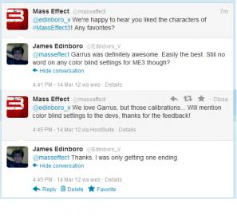

I don’t post very often, but I think this video would be pretty beneficial to the conversation.
I generally don’t jump on the bandwagon for these kinds of things, and there isn’t much that hasn’t been said, but nothing this guy said is wrong, imo.

I don’t post very often, but I think this video would be pretty beneficial to the conversation.
I generally don’t jump on the bandwagon for these kinds of things, and there isn’t much that hasn’t been said, but nothing this guy said is wrong, imo.
[COLOR=‘Red’]— Ending Spoilers —
I disagree that there needs to be a “good” ending where Shepard lives and everyone lives happily ever after. They set it up at the beginning of the game that not everyone could be saved, so it only makes sense that this concept remains consistent throughout the ending.
Points though for a pretty decent Garrus impersonation.
Okay, I already knew that happened but not everyone else does so, maybe do something like put spoilers before it or something.
Sorry, I added a spoiler warning. Don’t know why I forgot to add one that time, I’ve been adding them pretty heavily in my previous posts.
Eh, the deed is done.
I still haven’t decided to play it yet, but for those who got the dlc party member, (I know who he is, I’m just being vague for the sake of spoilers) is he worth the extra 10 bucks?
Can’t you enable him for free?
I heard there’s some parts about him on the disc already and some that’s not. So if you only use what’s on the disc you won’t get everything, so you’d have to download the rest somehow.
That video was very misleading. You can “enable” him, but from what I understand, despite some combat dialogue he really isn’t a character. The mission to acquire him doesn’t exist, and I’m not sure if he is even on the Normandy. The download of ~650 mb of data is a lot of stuff, even for something as big as Mass Effect. 7 party members at ~650 mb each equals almost a fourth of the game.
Yeah, I haven’t played the game past the first level, but I think that video was incredibly wrong. Again, I don’t know for certain, but since the prothean shows up in the game regardless, it’s highly likely that without that DLC, he’s just a mission specific party member, and that’s why he’s on the disc. The mission itself however, isn’t. But of course, people blow things out of proportions and believe anything.
Nope, you don’t see him in any way if you don’t have the DLC.
He is interresting, but not much more, he is also badly injected in the game, you bring him in the citadel and noone seem to care about the prothean wandering around (you get only 1 speech were people actually notice him).
You can only get him to talk in the normandy, zaed & kasumi like in the 2, you “press him” and listen to what he has to say.
In any case, pirate it.
that’s wrong, there are i guess “major” speeches with him. especially if your choices are right with Liara. there’s 3 major speeches opposed to zaed in which his were only a short sentence when recruited and a short sentence on his loyalty mission, as with kasumi.
Even then i understand what your saying, but he’s not the same as kasumi and zaed as they at no point they interact with other characters with shepperd as the exception. the prothean does. even if limited.
still i did find it stupid how everyone’s like. eh… its just an extinct race from 50 thousand years ago.
While I’m not sure if the DLC is worth the full $10 if you bought the game at full price, it’s definitely not a bad DLC. The character has some very interesting dialogue and with a few exceptions, such as a lack of reaction on the citadel, he’s pretty well integrated.
Honestly, I’m pondering what Liara would even be talking about without him in the game. It seems like all she ever wants to talk about is the fact that a Prothean is on board. Oh, ya, if you don’t like Liara the Prothean spends 90% of the time shattering Liara’s illusions about the Protheans, and it’s fun to watch her squirm.
with not being able to avoid major plot twists [COLOR=‘Black’]the main discussion is what dino just said that and when you find out the protheans are actually the asari’s gods, the protheans trickle technology and information into there society very carefully because the new the asari would be the dominant race in the next cycle.
the dialogue shared between liara and the prothean is based around that towards the end and in between, like i said earlier there’s not allot of dialogue but enough to support his character.
but in all i did enjoy the dlc, the mission its self on insanity wasnt at all that challenging but teh subsequent info you gain off the prothean was nice because that extra bit of law you gain.
So apparently, SPOILERS:
[COLOR=‘Black’]There’s technically a way for Shepard to live in ME3.
“Of course, not all of Mass Effect 3’s endings actually end in Shepard’s death. If you’ve met certain conditions, a short scene plays showing Shepard’s body amongst debris, her chest expanding as she takes a breath. Only a subset of players will have actually accomplished this, though.” Link tells what those ‘certain conditions’ are. https://uk.ign.com/wikis/mass-effect-3/Endings Note: I didn’t read anything in the link, I’m merely providing it, so please still keep ending stuff spoiled.
This MAY have been said in earlier pages of the thread idk, I don’t trust myself not to accidentally read any spoilers in earlier pages so if this is just reposting apologies.
EDIT: If you don’t want to be spoiled don’t click the link, the rest of the black is spoiled parts I said.
Everybody already knew about it.
it still lame. 3 seconds of that ending which i achieved is no just reward. and you only get that threw the renegade ending. renegade… i had to choose renegade at teh ending despite going paragon from the beginning of me1
The ending is really disappointing and not what BioWare told us they were aiming for. It doesn’t even make sense. I think they wrote themselves into a corner and suddenly realised they couldn’t achieve what they wanted so they dump a cliche ending in that took no effort. This along with the DLC definitely means I wont play another EA game and probably not another BioWare game. The biggest insult is after the credit a message pops congratulating you on completing the game and reminds you to wait with baited breath for DLC.
I lol’d so hard when I seen this pic

Spoilers
So I just finished ME3 and I have to say being a long time fan of the game and playing them all that I am left a little disappointed With the ending. Not because of the dark endings or that there wasn’t much choice but by the fact there where choices… I don’t know about the rest of you but for myself each games ending all depended on your choices made throughout the game and when your told to have a choice between the RGB pathways I felt that the game took away from the strength of the mass effect universe as well as the replay value. And I say the replay value because no matter the choices I made all 3 games the fate of the universe still all comes down to a choice in the last 5 mins … Although I enjoyed the game I am left a little frustrated 
Founded in 2004, Leakfree.org became one of the first online communities dedicated to Valve’s Source engine development. It is more famously known for the formation of Black Mesa: Source under the 'Leakfree Modification Team' handle in September 2004.